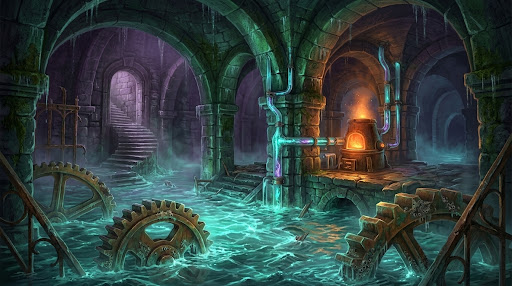

You drop through the storm bulkhead and land knee-deep in freezing, bioluminescent seawater. The cellar of the lighthouse is far older than the tower above it, a vaulted chamber of cyclopean green stone where massive brass gears turn slowly beneath the surface of the tide. Every rotation sends a shudder through the soles of your boots and feeds a network of glass conduits climbing up the inner walls. Wading toward the center of the chamber, you spot the source of the amber glow: a pressurized alchemical furnace struggling against the rising flood. Right beside the furnace sits a tarnished pressure wheel marked with a crescent-moon keyhole, an exact match for the heavy iron key in your coat pocket. Not ten paces away, where the cellar wall has collapsed into a natural sea-cave, a sealed copper cylinder bobs on the glowing tide at the mouth of a submerged drainage tunnel that leads straight toward the hollow heart of the reef. The water rises another inch against your thighs as the ceiling groans under the weight of the tempest outside.